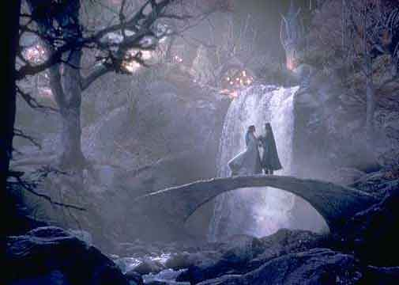
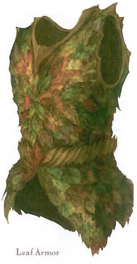
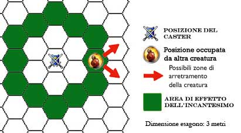
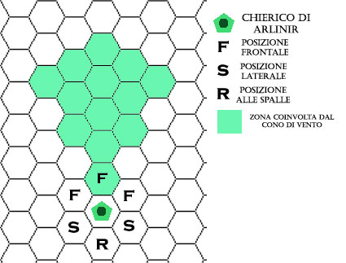

Enciclica degli Incantesimi Speciali di Arlinir

ORISONS DI ARLINIR
Calm Word
| Sfera di riferimento | Protection |
| Range | 10 metri |
| Duration | Istantanea |
| Area of Effect | Una creatura |
| Components | V,S |
| Casting Time | 3 |
| Saving Throw | None |
Con una parola di Arlinir il chierico cerca di calmare una creatura soggetta agli effetti di fear sia magica che naturale. Se la creatura supera un tiro salvezza contro incantesimi mentali con una penalità di -2 si calmerà, altrimenti la magia non avrà avuto alcuno effetto e questo incantesimo non potrà più essere utilizzato efficacemente per eliminare quella fonte di paura da quella creatura.
Leafs' Sound
| Sfera di riferimento | Illusion |
| Range | 0 |
| Duration | Speciale |
| Area of Effect | sfera 10 metri raggio |
| Components | V,S |
| Casting Time | 1 round |
| Saving Throw | Negates |
Per lanciare questo orison occorre che il chierico di trovi in una foresta. Con il lancio di questa magia il chierico produce il suono di foglie autunnali calpestate. Tutte le creature, amiche o nemiche, che si trovano entro 10 metri dal chierico e che falliscono un tiro salvezza contro incantesimi mentali si faranno distrarre dal suono e avranno il round successivo una penalità di +2 all'iniziativa.
Minimum Healing
| Sfera di riferimento | Healing |
| Range | Tocco |
| Duration | Istantanea |
| Area of Effect | Una creatura |
| Components | V,S |
| Casting Time | 5 |
| Saving Throw | None |
Il chierico cura con il suo tocco magicamente 1 punto ferita alla creatura soggetta alla magia. Trattandosi di cure magiche sono in grado di fare uscire un comatoso dal suo stato di coma.
1° LIVELLO DI POTERE
| Decompose Corpse | Alteration |
| Sphere : | Animal |
| Range : | 15 metri |
| Components : | V,S |
| Duration : | Permanente |
| Casting Time : | 1 hour |
| Area of Effect : | Alcuni corpi inanimati |
| Saving Throw : | None |
Questa magia serve ai chierici di Arlinir per i riti funebri. In sostanza può essere lanciata solo su cadaveri che siano inanimati (non funziona infatti sui non morti), una volta lanciata i cadaveri che subiscono l'effetto della magia si trasformano in humus fertilizzante di ottima qualità in grado di essere assorbito velocemente dal terreno e che è perfettamente compatibile con l'ecosistema della foresta elfica. Un chierico può decomporre 1 cadavere di dimensioni medie per livello di esperienza (un cadavere small o tiny sarà considerato pari a 1/2 cadavere mentre i più grandi saranno considerati pari rispettivamente a Large 2 cadaveri, Huge 5 cadaveri, Gargantuan 10 cadaveri). Una volta trasformate le spoglie di coloro siano considerati degni la restante parte rito funerario consisterà nell'utilizzare questo materiale fertilizzante per concimare un albero sacro a loro dedicato. Una volta effettuata questa trasformazione l'humus non potrà essere in alcun modo più considerato come le spoglie di colui che è morto (quindi non avranno effetto molti incantesimi che possono essere utilizzati sul corpo di un defunto).
| Dew on the Leaf | Conjuration |
| Sphere : | Creation |
| Range : | Tocco |
| Components : | V,S,M |
| Duration : | Speciale |
| Casting Time : | 1 round |
| Area of Effect : | 1 creatura di size M |
| Saving Throw : | None |
Questa magia viene lanciata su una particolare grossa foglia dalle dimensioni notevoli, la foglia deve essere mantenuta nelle mani di una creatura. Al lancio della magia inizia a crearsi sulla superficie della foglia abbondante rugiada che gocciolando verso il centro permette a una creatura di size M di dissetarsi per un'intera giornata. L'acqua che si crea non può essere conservata ma deve essere bevuta direttamente dalla foglia altrimenti evaporerà dopo pochissimo tempo. L'acqua è appena sufficiente solo per una creatura di dimensioni M e non può essere razionata per permettere a più persone di sopravvivere. Per dissetarsi attraverso la foglia la creatura impiegherà circa un turno. Se vogliono abbeverarsi creature di dimensioni diverse, si consideri una creatura media come 1 creatura, una creatura S come 0.5 creatura e una creatura T come 0.3 creatura. Il componente materiale di questa magia è la particolare e resistente foglia che permette il lancio della magia, questa foglia è trattata attraverso prodotti erboristici in modo tale da restare verde, e quindi valida per lanciare la magia, per 1 mese, il suo peso è di 1 lb. e il costo di mercato è di 15 gp. ma non si consuma al lancio della magia (va però rinnovata ogni mese).
| Elven Music | Charme |
| Sphere : | Charme |
| Range : | 0 |
| Components : | V,S,M |
| Duration : | Speciale |
| Casting Time : | 1 hour |
| Area of Effect : | 1 creatura per livello |
| Saving Throw : | None |
Per poter lanciare questo incantesimo il chierico deve saper utilizzare molto bene uno strumento musicale e superare un check nella competenza musical instrument (che è un requisito necessario) al momento del lancio altrimenti la magia fallirà. Se il check riesce il chierico inizia a cantare e a suonare bellissima musica elfica e a rassicurare gli elfi presenti raccontando gesta eroiche compiute dal loro popolo. Questa magia potrà influenzare unicamente i fedeli di Arlinir e gli amici del popolo elfico che si trovino entro 50 metri dal chierico, lo vedano e siano in grado di udire la sua melodiosa musica. Il numero massimo di creature che possono ricevere questo beneficio dipende dal livello del chierico (se il chierico vuole ricevere il medesimo beneficio dovrà essere contato nel numero delle creature). Questa magia va utilizzata in momenti di rilassamento e infonderà negli elfi coraggio e porterà loro buona fortuna. Coloro sono stati sotto effetto della magia potranno nelle 24 ore seguenti utilizzare per due volte, non cumulabili però sul medesimo tiro un unico bonus, un bonus di +1 (+5%) a un qualsiasi loro tiro di dado, e potranno scegliere di utilizzare questo bonus dopo aver visto il risultato del dado stesso. In nessun caso questo bonus può servire ad evitare od a far ottenere tiri critici o acritici che sono sempre effettuati naturalmente dalle creature. Il componente materiale di questa magia è lo strumento musicale che il chierico deve suonare per almeno l'ora di lancio in situazione di rilassamento e che non si consuma la lancio della magia ma deve essere in buone condizioni.
| Forest Scent | Alteration |
| Sphere : | Charme |
| Range : | 0 |
| Components : | V,S,M |
| Duration : | 1 round per livello |
| Casting Time : | 3 |
| Area of Effect : | sfera di 15 m. di raggio |
| Saving Throw : | Negates |
Questa magia può essere lanciata solo in aree boschive. Dopo il lancio di questa magia in tutta l'area di azione si sprigiona un intensissimo odore di sottobosco, si tratta di un odore così forte che è in grado di inebriare le creature che sono all'interno dell'area di effetto. Gli elfi, a parte gli elfi scuri e gli elfi marini, i mezzi-elfi, le creature della foresta (come Treant, Driadi, Trolls ecc...) sono immuni dall'effetto di questa magia. Tutte le altre creature che si trovano o entrano nell'area di effetto della magia devono invece effettuare un tiro salvezza contro incantesimi oppure soffrire gli effetti della magia fino a che resteranno nell'area. Coloro che falliscono il tiro salvezza avranno -2 ai tiri per colpire e un malus di +1 a tutti i tiri salvezza. La sfera avrà come centro la posizione del caster al momento dell'uso della magia e una volta lanciata non si muoverà al muoversi del chierico, ma resterà nella posizione di lancio. Il componente materiale e un pezzo di resine altamente odorose e trattate che ha un prezzo di mercato pari a 10 gp. che si consumano al lancio della magia.
| Moon Blade | Enchatment |
| Sphere : | Combat |
| Range : | Tocco |
| Components : | V,S,M |
| Duration : | 1 turn |
| Casting Time : | 1 round |
| Area of Effect : | 1 short or long sword |
| Saving Throw : | None |
Quando il sacerdote di Arlinir lancia questa magia su una qualsiasi spada lunga o spada corta la stessa sarà incantata in modo tale da illuminarsi di una calda ed avvolgente luce bianca in grado di illuminare fino a 6 metri di distanza. La luce non è molto intensa per cui coloro che combattono con questa luce subiscono comunque una penalità di -1 ai tiri per colpire e di -1 ai tiri salvezza ed a tutte le prove che richiedano di schivare o di riconoscere visivamente qualcosa. In ogni caso, la zona illuminata si considererà come sotto la luce diretta del Disco della Luce. Per tutta la durata della magia, inoltre, ogni volta che il chierico di Arlinir colpisce con tale arma una creatura non-morta la stessa dovrà superare un tiro salvezza contro paralisi o restare paralizzata fino alla fine del round successivo a quello in cui è stata colpita. Se la spada incantata dal chierico è di mithril il non morto riceverà una penalità di -1 a tale tiro salvezza e la lama risplenderà in modo tale da illuminare fino a 9 metri di distanza. Qualora nel corso della durata della magia, per qualsiasi motivo, l'arma non sarà più impugnata dal chierico di Arlinir che l'ha incantata, l'incantesimo terminerà immediatamente. Il componente materiale di questo incantesimo è il simbolo sacro del chierico ed una piccolo pezzo di mithril dal peso di 1/2 di lb. e dal costo di 5 monete d’oro che si consuma al lancio della magia.
| Moon Light | Evocation (Radiance) |
| Sphere : | Sun |
| Range : | 6 metri + 3 metri per livello |
| Components : | V,S |
| Duration : | 1 hour per livello |
| Casting Time : | 1 round |
| Area of Effect : | sfera di 27 m. di diametro |
| Saving Throw : | None |
Questa magia crea una zona illuminata come sotto la luce diretta del Disco della Luce. Tutta l'area di effetto viene investita dalla bianca luce lunare. La luce non è molto intensa e non ha un punto di partenza ma è diffusa su tutta l'area in modo uniforme, per cui è poco utile per la lettura e comunque coloro che combattono con questa luce subiscono -1 ai tiri per colpire, ai tiri salvezza ed alle prove che richiedano di schivare o di riconoscere visivamente qualcosa, nonché il 10% di fallire nel lancio delle magie a distanza. In alcuni contesti, come in aperta foresta e da lunga distanza questo tipo di luce è difficilmente individuabile e attira poco l'attenzione, la si riconosce come artificiale solo nel 30 % dei casi, questo discorso non vale in zone di buio assoluto ed in aree più ristrette.
| Sleeping Arrows | Enchatment |
| Sphere : | Combat |
| Range : | Tocco |
| Components : | V,S,M |
| Duration : | 1 round al 1° liv. + 1 round/2 liv. oltre il 2° |
| Casting Time : | 1 round |
| Area of Effect : | 1 short or long bow |
| Saving Throw : | None |
Quando il sacerdote di Arlinir lancia questa magia su un qualsiasi arco, lo stesso sarà incantato in modo tale da permettere al chierico di scagliare dei particolari dardi magici di luce divina di colore dorato brillante che lasciano durante il loro volo una scia di polvere del medesimo colore. Tali frecce possono far assopire le creature che colpiscono. Per tale motivo, a partire dal round successivo a quello di lancio e per tutta la durata della magia, il chierico di Arlinir che ha lanciato l’incantesimo potrà lanciare fino a due di queste frecce magiche in luogo di due frecce che avrebbe potuto lanciare durante ogni singolo round di combattimento. In particolare, quando il chierico tenderà la corda dell’arco, si materializzeranno queste frecce di luce divina. Si noti che il chierico dovrà effettuare normali attacchi con tali frecce, affaticandosi e potendo utilizzare le normali manovre di combattimento ed i punti combattimento (ad eccezione dei colpi generali dell’attacco di forza e del conficcamento nonché di tutti i colpi di combattimento speciali che non possono essere effettuati con queste frecce di pura energia). Essendo frecce di energia divina, non sarà necessario per il chierico utilizzare punti combattimento nel colpo generale precisione nella mira per evitare di colpire creature diverse da quella mirate. Il chierico non potrà effettuare colpi critici utilizzando tali frecce mentre potrà subire normalmente effetti di tiri acritici. Si noti che il chierico potrà anche lanciare nel medesimo round una o due di queste frecce in combinazione con altre diverse frecce. Ogni volta che il chierico colpisce con una di queste frecce una qualsiasi creatura che abbia un ammontare massimo di dadi/vita o livelli pari a tre livelli in meno rispetto al livello al quale il chierico ha lanciato questa magia, ed in ogni caso creature di 1 dado/vita o livello, la vittima dovrà superare un tiro salvezza contro incantesimi mentali o cadere addormentata per 5 rounds. Naturalmente i non-morti, i costruiti e le altre creature che non possono subire effetti di controllo mentale o che non dormono sono immuni all’effetto di questo incantesimo. L’incantesimo termina dopo che sono trascorsi 1 round al primo livello di esperienza ed un round supplementare ogni due livelli di lancio della magia oltre il secondo (per esempio 1 round a partire dal 1° al 3° livello, 2 rounds a partire dal 4°livello, 3 rounds a partire dal 6°livello e così via) fino ad un massimo di 5 rounds al 10° livello. Il componente materiale di questo incantesimo è il simbolo sacro del chierico ed una piccola miniatura d’oro di una valeriana del riposo dal peso di 1/10 di lb. e dal costo di 7 monete d’oro che si consuma al lancio della magia.
2° LIVELLO DI POTERE
| Arlinir Return | Divination |
| Sphere : | Traveler |
| Range : | 0 |
| Components : | V,S,M |
| Duration : | Speciale |
| Casting Time : | 1 round |
| Area of Effect : | Speciale |
| Saving Throw : | None |
Questa magia è utilizzata dai chierici di Arlinir per tornare in modo sicuro ad un tempio attivo di Arlinir in qualsiasi foresta. Quando il chierico lancia questa magia conoscerà istante per istante la direzione migliore da seguire per raggiungerle il tempio di Arlinir più vicino all'interno della foresta. Il chierico non conoscerà la direzione o la distanza ma il sentiero nella foresta che conduce al tempio nel minor tempo possibile. Inoltre la magia non indicherà la strada meno pericolosa ma la più veloce in termini di cammino, ad esempio scarterà un percorso tramite un ponte crollato scegliendo un percorso alternativo ma non un sentiero che passa nelle vicinanze di un villaggio di orchi. Questa magia funziona solo all'interna di quella che è possibile ritenere una unica foresta, non importa la sua dimensione reale, se però il tempio si trova in una foresta diversa o separato dalla foresta per esempio da una pianura la magia fallirà. Nella valutazione di una foresta dovranno essere presi in considerazione sia aspetti geografici che socio-culturali, ad esempio una zona di una foresta potrebbe essere considerata una foresta diversa pur essendoci continuità di piante tra le due foreste. In caso vi siano più templi di Arlinir l'incantesimo indicherà sempre quello più vicino al caster. Il componente materiale è formato da un magnete naturale che si consuma al lancio dell'incantesimo.
| Arlinir Sweet Touch | Alteration |
| Sphere : | Combat |
| Range : | 30 metri |
| Components : | V,S |
| Duration : | Speciale |
| Casting Time : | 1 round |
| Area of Effect : | One creature |
| Saving Throw : | None |
Nel round immediatamente successivo al lancio di questa magia il chierico di Arlinir potrà lanciare un qualsiasi incantesimo a tocco benefico abbia a disposizione dal 1° e 3° livello di potere sulla stessa creatura che è stata oggetto di questa magia senza che sia necessario alcun tiro per colpire. E' necessaria però che la creatura beneficiata non provi a resistere e che si trovi sempre entro 30 metri di distanza dal chierico.
| Bow of Faith | Enchatment |
| Sphere : | Combat |
| Range : | Tocco |
| Components : | V,S,M |
| Duration : | 2 rounds + 1 round/two levels |
| Casting Time : | 1 round |
| Area of Effect : | 1 short or long bow |
| Saving Throw : | None |
Quando il sacerdote di Arlinir lancia questa magia su un qualsiasi arco lo stesso sarà incantato in modo tale da permettere al chierico di poter aumentare la propria precisione nella mira utilizzando la concentrazione della propria fede. Per tale motivo, a partire dal round successivo a quello di lancio e per tutta la durata della magia, esclusivamente il chierico di Arlinir che ha lanciato l’incantesimo potrà addizionare, utilizzando l’arco così incantato, il bonus del magical defense adjustment posseduto in base al suo punteggio di saggezza alla propria Thac0. L’incantesimo termina dopo che sono trascorsi 2 rounds + 1 round ogni due livelli di lancio della magia (per esempio 4 rounds a partire dal 4° livello, 5 rounds a partire dal 6°livello, e così via). Il componente materiale di questo incantesimo è il simbolo sacro del chierico.
| Elven Meal | Conjuration |
| Sphere : | Creation |
| Range : | 0 |
| Components : | V,S,M |
| Duration : | Speciale |
| Casting Time : | 1 round |
| Area of Effect : | Speciale |
| Saving Throw : | None |
Questa magia può essere lanciata solo in aree boschive. Quando il chierico di Arlinir lancia questo incantesimo appare 1 sprite per livello del chierico, questi folletti del bosco portano delle foglie piene di delizie culinarie della foresta (radici commestibili, miele, frutta, bacche, funghi ecc...), si tratta di cibaria ad alto contenuto energetico. Ogni 2 sprite portano cibo sufficiente a una creatura M. Se vogliono cibarsi creature di dimensioni diverse, si consideri una creatura media come 1 creatura, una creatura S come 0.5 creatura e una creatura T come 0.3 creatura, una creatura L come 3 creature, creature più grandi non avranno mai cibo a sufficienza attraverso questo incantesimo. I folletti non arriveranno se la zona dove si trova il chierico non è relativamente sicura, se per esempio è circondato o si trova nella tana di un mostro, sarà il DM a valutare discrezionalmente se sia possibile l'arrivo dei folletti. Il componente materiale per questa magia è un piccolissimo campanellino d'argento ( peso 1/10 ) dal valore di 3 monete d'oro che piace molto ai folletti e che porteranno via con loro allo scadere della magia.
| Entangling Arrows | Enchatment |
| Sphere : | Combat |
| Range : | Tocco |
| Components : | V,S,M |
| Duration : | 1 round/two levels |
| Casting Time : | 1 round |
| Area of Effect : | 1 short or long bow |
| Saving Throw : | None |
Quando il sacerdote di Arlinir lancia questa magia su un qualsiasi arco, lo stesso sarà incantato in modo tale da permettere al chierico di scagliare dei particolari dardi magici di luce divina di colore verde brillante che lasciano durante il loro volo una scia di polvere del medesimo colore. Tali frecce possono bloccare i propri avversari. Per tale motivo, a partire dal round successivo a quello di lancio e per tutta la durata della magia, il chierico di Arlinir che ha lanciato l’incantesimo potrà lanciare fino a due di queste frecce magiche in luogo di due frecce che avrebbe potuto lanciare durante ogni singolo round di combattimento. In particolare, quando il chierico tenderà la corda dell’arco, si materializzeranno queste frecce di luce divina. Si noti che il chierico dovrà effettuare normali attacchi con tali frecce, affaticandosi e potendo utilizzare le normali manovre di combattimento ed i punti combattimento (ad eccezione dei colpi generali dell’attacco di forza e del conficcamento nonché di tutti i colpi di combattimento speciali che non possono essere effettuati con queste frecce di pura energia). Essendo frecce di energia divina, non sarà necessario per il chierico utilizzare punti combattimento nel colpo generale precisione nella mira per evitare di colpire creature diverse da quella mirate. Il chierico non potrà effettuare colpi critici utilizzando tali frecce mentre potrà subire normalmente effetti di tiri acritici. Si noti che il chierico potrà anche lanciare nel medesimo round una o due di queste frecce in combinazione con altre diverse frecce. Se il chierico colpisce con una di queste frecce una qualsiasi creatura che si trovi su una superficie solida la freccia si dissolverà e la vittima dovrà superare un tiro salvezza contro incantesimi, se tale tiro salvezza fallisce, una serie di rampicanti compariranno intorno alle gambe della vittima bloccandola sul posto ed impedendole di spostarsi per 5 rounds (la magia non ha effetto su creature che si trovano in volo e che si trovano su una superficie liquida). La vittima, però, potrà combattere e compiere altre azioni sul posto senza subire alcuna penalità. Le creature di taglia Small o Tiny ricevono una penalità di -1 al suddetto tiro salvezza mentre le creature Large ottengono un bonus di +2 allo stesso, le creature di taglia Huge o superiore sono immuni agli effetti di questa magia. L’incantesimo termina dopo che sono trascorsi 1 round ogni due livelli di lancio della magia (per esempio 2 rounds a partire dal 4° livello, 3 rounds a partire dal 6°livello e così via) fino ad un massimo di 5 rounds al 10° livello. Il componente materiale di questo incantesimo è il simbolo sacro del chierico ed un ramoscello di edera di argento in miniatura dal peso di 1/10 di lb. e dal costo di 3 monete d’oro che si consuma al lancio della magia.
| Infrainvisibility | Alteration |
| Sphere : | Sun |
| Range : | Tocco |
| Components : | V,S,M |
| Duration : | 8 ore |
| Casting Time : | 1 round |
| Area of Effect : | 1 creatura toccata |
| Saving Throw : | Nessuno |
Questo incantesimo maschera l'impronta di calore della creature e dei suoi oggetti rendendola del tutto non individuabile attraverso l'infravisione, anche se resterà visibile alla vista comune. Ovviamente le creature infrainvisibili non saranno anche magicamente silenziate e certe condizioni ( anche attraverso le magie che individuano l'invisibile ) possono rendere le creature individuabili. Anche gli alleati non potranno vedere la creatura infrainvisibile attraverso la sola infravisione. Gli oggetti lasciati dala creatura infrainvsibile diventano subito osservabili con l'infravisione, mentre quelli presi (solo se trasportabili comodamente) spariranno dalla vista di coloro stiano guardando con l'infravisione. Comunque, le fonti di luce, gli oggetti particolarmente caldi continueranno ad essere osservabili. La magia rimane in effetto fino a che non sia magicamente dispersa, fino a che il chierico o il sottoposto alla magia non la facciano deliberatamente terminare e comunque non appena il sottoposto attacchi una qualsiasi creatura o oggetto, oppure lanci un qualsiasi incantesimo. La creatura diventerà comunque visibile all'infravisione alla fine del round in cui ha compiuto una tale azione. Il componente materiale di questa magia è un pezzo di materiale isolante di origine vegetale dal peso di 1 lbs. (il cui valore si aggira sulle 30 g.p.) che si consuma al lancio della magia.
|
 |
Leafs Armor | Abjuration |
| Sphere : | Plants | |
| Range : | 0 | |
| Components : | V,S,M | |
| Duration : | 1 ora | |
| Casting Time : | 1 round | |
| Area of Effect : | The Caster | |
| Saving Throw : | None | |
|
Quando questa magia viene lanciata appare sul corpo del caster una corazza di materiale vegetale, foglie e rami flessibili. La corazza è leggerissima ed estremamente comoda e porta il caster ad una Classe Armatura base pari a 5. A tutti i fini si considera che, durante l'effetto di questa magia, il chierico stia indossando una comune armatura di cuoio rinforzato (la corazza, però, resisterà magicamente a tutti i danni subiti per l'intera durata dell'incantesimo). Quando il chierico indossa questa corazza costui, ovviamente, non potrà portare od indossare alcun altra corazza. In qualsiasi momento il chierico utilizzando un'azione complessa dalla durata di un intero round potrà levarsi di dosso questa corazza che svanirà immediatamente in una nuvola di foglie che si ridurranno in polvere. Considerandosi una comune corazza potranno applicarsi gli eventuali bonus derivanti dalla destrezza o da altri oggetti magici (come ad esempio un anello di protezione) indossati dal chierico. Trascorsa un'ora dal lancio di questo incantesimo, la corazza svanirà (sempre che non sia stata dissolta magicamente prima). Il componente materiale di questo incantesimo è una manciata di foglie rare dal costo di 5 monete d'oro e dal peso di 1/10 di libbra che si consuma al lancio della magia. |
||
| Lesser Moon Ray | Evocation (Positive) |
| Sphere : | Healing |
| Range : | 15 metri |
| Components : | V,S |
| Duration : | Istantanea |
| Casting Time : | 2 |
| Area of Effect : | 1 creatura |
| Saving Throw : | Special |
Lanciando questa magia il chierico di Arlinir invoca un benefico raggio dalla luna sacra alla dea (il Disco della Luce) in grado di curare a distanza coloro siano feriti. Questa magia può essere lanciata solo all'aperto quando quella luna è visibile, quindi non può essere usata nelle caverne, durante il giorno, nelle nottate troppo nuvolose ed il giorno V di ogni decade (quando questa luna è totalmente eclissata dalla più grande luna chiamata Goccia di Sangue) oppure in zone illuminate magicamente dalla luce lunare (ad es. come con l'incantesimo Moon Light). In ogni caso, occorre che sia il caster che il suo bersaglio si trovino all'interno dell'area illuminata dalla luce lunare. Chi sarà colpito dal raggio riceverà una cura pari ad 1-6 punti ferita. Se questa magia è diretta contro una creatura non morta, invece di curarla, provocherà alla stessa danni (positive direct damage) pari ad 1 punto danno di energia positiva per livello del chierico.
| Moon Selector | Evocation (Radiance) |
| Sphere : | Sun |
| Range : | 100 metri |
| Components : | V,S |
| Duration : | 2 rounds per livello |
| Casting Time : | 5 |
| Area of Effect : | 1 creatura |
| Saving Throw : | Negates |
Questa magia può essere lanciata solo all'aperto quando quella luna è visibile, quindi non può essere usata nelle caverne, durante il giorno, nelle nottate troppo nuvolose ed il giorno V di ogni decade (quando questa luna è totalmente eclissata dalla più grande luna chiamata Goccia di Sangue) oppure in zone illuminate magicamente dalla luce lunare (ad es. come con l'incantesimo Moon Light). In ogni caso, occorre che sia il caster che il suo bersaglio si trovino all'interno dell'area illuminata dalla luce lunare. Quando questa magia è lanciata, qualora la vittima fallisca il previsto tiro salvezza, costei verrà illuminata per tutta la durata della magia da un forte bagliore di luce lunare. Questa luce illuminerà solo la creatura selezionata rendendola ben visibile e permettendo alle altre creature di colpirla con un bonus di +1 ai tiri per colpire. La luce continuerà a illuminare la creatura anche qualora questa, durante l'effetto della magia, si sposti in zone ove non sarebbe stato possibile lanciare l'incantesimo, come all'interno di una caverna.
| Protection from Aging | Abjuration |
| Sphere : | Time |
| Range : | Tocco |
| Components : | V,S,M |
| Duration : | 1 round per livello |
| Casting Time : | 5 |
| Area of Effect : | 1 creatura |
| Saving Throw : | Nessuno |
Mentre si trova sotto l'effetto di questa magia, colui che ne è sottoposto è immune all'invecchiamento non naturale anche se sia conseguenza di un attacco ( come nel caso del ghost ) o se è l'effetto collaterale di un'altra magia (come nel caso di haste). Si noti che questo incantesimo non renderà in alcun caso il beneficiario immune dall'invecchiamento causato dal malfunzionamento delle pozioni magiche del tipo Potion of Longevity. Questa magia non protegge però dall'invecchiamento naturale. Il componente materiale di questa magia è una piccola clessidra d'argento dal valore di almeno 50 corone che si consuma al lancio della magia e il simbolo sacro del chierico.
3° LIVELLO DI POTERE
| Elven Fury | Charm |
| Sphere : | Combat |
| Range : | 0 |
| Components : | V,S,M |
| Duration : | 1 round + 1 round/level |
| Casting Time : | 4 |
| Area of Effect : | The Caster |
| Saving Throw : | None |
Quando il sacerdote di Arlinir lancia questa magia su se stesso, invoca la furia combattiva ed il coraggio proprio della razza elfica. Per tale motivo, a partire dal round successivo a quello di lancio e per tutta la durata della magia, ogni volta che durante un round il chierico effettuerà un qualsiasi attacco in corpo a corpo contro un suo avversario, costui riceverà agli attacchi in corpo a corpo eventualmente effettuati nel round successivo (contro qualsiasi avversario) un bonus cumulativo di +1 al tiro per colpire ed al punteggio sul dado base delle ferite (un bonus che quindi migliora esclusivamente il tiro effettuato con il dado entro il risultato massimo previsto dal dado stesso), fino ad ottenere un bonus massimo di +4. Si noti che qualora il chierico di Arlinir combatta usando due armi il bonus previsto da questo incantesimi si applicherà solo agli attacchi effettuati con l'arma primaria. Deve osservarsi che non occorre che il chierico effettui attacchi nel round immediatamente successivo purché costui combatta nel corso della durata dell'incantesimo. Ad esempio, durante l’effetto dell’incantesimo, il primo round in cui il chierico attaccherà un avversario in corpo a corpo costui non riceverà alcun beneficio, il secondo round in cui effettuerà attacchi in corpo a corpo otterrà un bonus di +1 alla Thac0 ed al punteggio sul dado base delle ferite, il terzo round in cui effettuerà attacchi in corpo a corpo otterrà un bonus di +2 e così via. Il componente materiale di questo incantesimo è il simbolo sacro del chierico ed il pomo dell’elsa di una spada utilizzata da un condottiero elfico dal valore di 20 g.p. e dal peso 2/10 di libbra che si consuma al lancio della magia.
| Elven Youth | Alteration |
| Sphere : | Time |
| Range : | Tocco |
| Components : | V,S,M |
| Duration : | 1 hour / level |
| Casting Time : | 1 round |
| Area of Effect : | 1 creatura |
| Saving Throw : | Negates |
Questa potentissima magia dona a una qualsiasi creatura umana, umanoide o semi-umana (tranne gli elfi, ma funziona sugli half-elves) che abbia superato l'età adulta trovandosi ora nella categoria middle-aged o old, parte della essenza immortale degli elfi. Queste creature saranno per tutta la durata della magia ringiovanite nel loro fisico come se fossero di nuovo giovani e perderanno temporaneamente i malus che avevano accumulato. Qualora dovessero recuperare anche punti ferita persi a causa della diminuzione della costituzione questi saranno levati per primi in caso di ferite (si consideranno alla stregua dei punti feriti aggiuntivi dell'incantesimo Aid). Non esiste alcuna magia che possa aumentare la durata di questo incantesimo. Il componente materiale di questa magia è una boccetta di liquido (che il soggetto deve bere) ottenuta attraverso il distillato della linfa di piante rare ed estremamente longeve. Il peso della boccetta è di 1 lb. e il suo costo medio è di 50 g.p., si consuma al lancio della magia.
| Forest Poison | Conjuration |
| Sphere : | Combat |
| Range : | Tocco |
| Components : | V,S,M |
| Duration : | 1 turn / level |
| Casting Time : | 1 round |
| Area of Effect : | 1 arrow / 2 levels |
| Saving Throw : | Negates |
Con questo incantesimo il chierico di Arlinir fa in modo che 1 freccia (non funziona su dardi di balestre o altri proiettili) ogni due livelli di esperienza ( 1 al 1° e 2° livello, 2 al 3° e al 4°, ecc...) che abbia potuto toccare durante il casting time diventi cosparsa di un potente veleno di origine naturale. Si tratta di un veleno chiamato L'Oblio della Foresta Elfica, è molto raro e normalmente deve essere preparato con lunghi e complessi procedimenti erboristici. Questo veleno qualora iniettato nel sangue delle vittime le addormenta se queste non superano un tiro salvezza contro veleno. Si noti che, trattandosi a tutti gli effetti di un veleno, per il suo utilizzo dovranno essere seguite le normali regole per i veleni (link) ad eccezione della prova richiesta per spalmare il veleno sul proiettile (che non è richiesta), quella relativa alle dosi necessarie ad avvelenare i proiettili nonché, ovviamente, le regole relative alla durata del loro avvelenamento. Le caratteristiche del veleno sono le seguenti:
|
Oblio della Foresta Elfica |
| Modalità di somministrazione | Iniezione (Insinuativo) |
| Onset | 1d2+1 rounds |
| Modifica al Tiro Salvezza | nessuna |
| Durata | 1d6 turni |
| Delay | nessuno |
| Effetti TS riuscito / TS fallito | Nessuno / La vittima cade in un sonno profondo |
| Assuefazione | 24 ore |
| Note | Le creature di taglia Large ottengono un bonus di +2 al tiro salvezza, quelle di taglia Huge o superiore sono immuni all'effetto di questo veleno. |
Occorre che le frecce colpiscano una creatura ferendola per avvelenarla. Una volta avvelenate le frecce queste devono essere utilizzate entro 1 turno per livello del chierico, altrimenti il veleno non avrà più alcun efficacia. Il componente materiale per questa magia è una manciata di bacche velenose (costo complessivo di 25 g.p. e peso di 1/10 lb.) che si consumano al lancio della magia.
| Forest Storm | Conjuration |
| Sphere : | Combat |
| Range : | 30 metri |
| Components : | V,S,M |
| Duration : | 1 round per livello |
| Casting Time : | 5 |
| Area of Effect : | sfera di 15 metri di diametro |
| Saving Throw : | Negates |
Lanciando questa magia il chierico di Arlinir libera le forze della natura in una sfera di 15 metri di diametro. All'interno di questa sfera appariranno moltissime foglie secche autunnali, aghi di pino, piccoli sassi, ghiaia, ghiande e polvere, inoltre vi sarà una forte tempesta con vento vorticoso che trascina violentemente questi materiali. Chiunque si trova dentro la sfera o vi entra successivamente al lancio della magia dovrà immediatamente effettuare un tiro salvezza contro paralisi altrimenti sarà costretto a restare fermo e coprirsi gli occhi e le altre parti vulnerabili per il round nel quale ha fallito il tiro salvezza, all'inizio di ogni successivo round in cui la creatura si trova nell'area questa dovrà rinnovare il tiro salvezza. Creature non-morte e costruiti sono immuni a questo particolare effetto della magia mentre subiranno gli altri effetti in seguito descritti. Indipendentemente dall'esito del tiro salvezza la violenza con cui ghiande, aghi di pino e piccoli sassi colpiscono l'avversario procurerà 1d3 danni a tutti coloro si trovano nell'area alla fine di ogni round di permanenza all'interno della tempesta. Le foglie e la polvere inoltre renderanno la visibilità estremamente ridotta per cui tutti i tiri per colpire effettuati dentro la tempesta o dall'interno della tempesta all'esterno della stessa e viceversa (anche attraverso la tempesta) riceveranno una penalità di -2 al tiro del dado, concentrarsi all'interno dell'area risulta, inoltre, oltremodo difficile essendovi il 20% di possibilità di perdere la concentrazione durante il lancio delle magie. Il chierico di Arlinir può decidere di placare la tempesta anche prima della sua fine, per poterlo effettuare deve restare in concentrazione come se lanciasse la stessa magia (si considera quindi un'azione complessa ad iniziativa +5). Se il chierico riesce a mantenere la concentrazione, la tempesta svanirà alla fine del round svolgendo, però, regolarmente i suoi effetti nel round in cui il chierico ha provveduto a placarla. Il componente materiale è una piccola foglia d'oro rosso dal valore di 20 g.p. che si consuma al lancio della magia.
| Healing Arrows | Enchatment |
| Sphere : | Combat |
| Range : | Tocco |
| Components : | V,S,M |
| Duration : | 1 round/two levels |
| Casting Time : | 1 round |
| Area of Effect : | 1 short or long bow |
| Saving Throw : | None |
Quando il sacerdote di Arlinir lancia questa magia su un qualsiasi arco, lo stesso sarà incantato in modo tale da permettere al chierico di scagliare dei particolari dardi magici di luce divina di colore azzurro brillante che lasciano durante il loro volo una scia di polvere del medesimo colore. Tali frecce possono curare le creature che colpiscono. Per tale motivo, a partire dal round successivo a quello di lancio e per tutta la durata della magia, il chierico di Arlinir che ha lanciato l’incantesimo potrà lanciare fino a due di queste frecce magiche in luogo di due frecce che avrebbe potuto lanciare durante ogni singolo round di combattimento. In particolare, quando il chierico tenderà la corda dell’arco, si materializzeranno queste frecce di luce divina. Si noti che il chierico dovrà effettuare normali attacchi con tali frecce, affaticandosi e potendo utilizzare le normali manovre di combattimento ed i punti combattimento (ad eccezione dei colpi generali dell’attacco di forza e del conficcamento nonché di tutti i colpi di combattimento speciali che non possono essere effettuati con queste frecce di pura energia). Essendo frecce di energia divina, non sarà necessario per il chierico utilizzare punti combattimento nel colpo generale precisione nella mira per evitare di colpire creature diverse da quella mirate. Il chierico non potrà effettuare colpi critici utilizzando tali frecce mentre potrà subire normalmente effetti di tiri acritici. Si noti che il chierico potrà anche lanciare nel medesimo round una o due di queste frecce in combinazione con altre diverse frecce. Se il chierico colpisce con una di queste frecce una qualsiasi creatura la freccia si dissolverà e la vittima riceverà una cura pari a 5 punti ferita. Se la freccia colpisce una creatura non morta, invece di curarla, provocherà alla stessa danni (positive direct damage) pari a 5 punti danno di energia positiva. L’incantesimo termina dopo che sono trascorsi 1 round ogni due livelli di lancio della magia (per esempio 3 rounds a partire dal 6° livello, 4 rounds a partire dal 8°livello e così via) fino ad un massimo di 5 rounds al 10° livello. Il componente materiale di questo incantesimo è il simbolo sacro del chierico ed una miniatura d’oro di una ninfea curativa dal peso di 1/2 di lb. e dal costo di 15 monete d’oro che si consuma al lancio della magia.
| Immortality Preserver | Abjuration |
| Sphere : | Heal |
| Range : | Tocco |
| Components : | V,S,M |
| Duration : | Special |
| Casting Time : | 1 round |
| Area of Effect : | 1 elf |
| Saving Throw : | None |
Questa potente magia può essere lanciata solo sugli elfi, tranne gli elfi scuri e gli elfi acquatici, e quindi non ha alcun effetto sulle altre razze e nemmeno sui mezzi-elfi. E', infatti, un aiuto di Arlinir a preservare l'immortalità elfica. Nel round seguente al lancio di questa magia il chierico dovrà scegliere e lanciare sull'elfo che vuole proteggere un qualsiasi incantesimo di cura (che riguardi, però, i punti ferita) abbia memorizzato e che sia compreso tra il 1° e il 4° livello di potere. L'incantesimo di cura non avrà però effetti immediati ma resterà in quiescenza pronto ad attivarsi. Da quel momento in poi quando l'elfo protetto subirà il primo colpo che sia sufficiente a portarlo a 0 punti ferita o meno, senza però riuscire ad ucciderlo istantaneamente, verrà rilasciata contemporaneamente la magia di cura. A questo punto dovrà effettuarsi la differenza tra le ferite subite e le cure effettuate con la conseguenza che l'elfo non cadrà in coma tutte le volte che le cure effettuate siano in grado di mantenere i punti ferita sopra lo zero nonostante i danni inferti dal colpo in questione. Ciò non toglie che nello stesso round il protetto possa essere oggetto di altri danni che non daranno luogo però alla protezione che si è già consumata con il primo colpo. La magia terminerà quando si attiva per la prima volta o comunque sia raggiunto il prossimo momento utile per rinnovare la memorizzazione (che per Arlinir coincide con il massimo splendore del Disco della Luce che si verifica alle 21) indipendentemente dal fatto che il chierico preghi per rinnovare la memorizzazione. Il componente materiale è il simbolo sacro del priest.
| Medium Moon Ray | Evocation (Positive) |
| Sphere : | Healing |
| Range : | 15 metri |
| Components : | V,S |
| Duration : | Istantanea |
| Casting Time : | 2 |
| Area of Effect : | 1 creatura |
| Saving Throw : | Special |
Lanciando questa magia il chierico di Arlinir invoca un benefico raggio dalla luna sacra alla dea (il Disco della Luce) in grado di curare a distanza coloro siano feriti. Questa magia può essere lanciata solo all'aperto quando quella luna è visibile, quindi non può essere usata nelle caverne, durante il giorno, nelle nottate troppo nuvolose e il giorno V di ogni decade (quando questa luna è totalmente eclissata dalla più grande luna chiamata Goccia di Sangue) oppure in zone illuminate magicamente dalla luce lunare (ad es. come con l'incantesimo Moon Light). In ogni caso, occorre che sia il caster che il suo bersaglio si trovino all'interno dell'area illuminata dalla luce lunare. Chi sarà colpito dal raggio riceverà una cura pari a 2-8 punti ferita. Se questa magia è diretta contro una creatura non morta, invece di curarla, provocherà alla stessa danni (positive direct damage) pari a 2 punti danno di energia positiva per livello del chierico.
| Spike Defence | Conjuration |
| Sphere : | Plant |
| Range : | 0 |
| Components : | V,S,M |
| Duration : | 1 round / level |
| Casting Time : | 4 |
| Area of Effect : | The Caster |
| Saving Throw : | None |
Quando il sacerdote di Arlinir lancia questa magia introno a lui si alza dal suolo una barriera circolare di arbusti spinosi. La barriera è larga 3 metri ed è alta 1 metro e circonda il caster a 3 metri di distanza. Tutte le creature che si trovano fuori la barriera e vogliono raggiungere il caster (ad esempio per andare in melee con lui) dovranno provare a superarla. Dovranno quindi effettuare in tiro salvezza contro paralisi, se il tiro avrà successo attraverseranno la barriera (azione che richiede un intero round) subendo però 2d4 danni, se il tiro non avrà successo subiranno lo stesso i danni ma resteranno invischiati nella barriera, a questo punto ogni round successivo potranno provare a entrare o uscire ma dovranno sempre superare il tiro salvezza (altrimenti resteranno nella barriera) e comunque subiranno i danni. Le creature non intrappolate potranno, anziché passare nei rovi, provare ad aprirsi un varco fra questi ai fini di superare l'ostacolo. Per aprire un accesso di 3 metri nella barriera occorre provocare 30 punti di danno (la barriera ha AC 6) ma solo le armi da taglio di dimensioni almeno M possono danneggiarla (e ovviamente le magie come quelle di fuoco). Essendo alta solo 1 metro la barriera non impedisce al caster di usare armi da tiro o spell al di fuori della stessa, nè lo difende dai colpi e dagli spell che vengono dall'esterno. Se al momento del lancio della magia già ci sono creature in melee con il chierico queste si troveranno con lui all'interno della barriera. Si noti che creature di dimensioni H o G non potranno rimanere incastrate nella barriera ma subiranno solo i danni durante l'attraversamento. Questa magia non può essere lanciata in modo tale da bloccare nei rovi una creatura. Le creature che si sarebbero trovate all'interno della barriera, infatti, potranno scegliere se restare invischiate nella stessa (subendo i relativi danni) od uscire fuori dalla barriera in una zona immediatamente adiacente alla stessa (in nessun caso possono decidere di restare dentro la barriera). Il componente materiale è un ramo di rovi di argento dal peso di 1 lb. e dal costo di 30 g.p. che si consuma al momento del lancio della magia.

| Wind Violence | Alteration |
| Sphere : | Elemental Air |
| Range : | 0 |
| Components : | V,S,M |
| Duration : | Istantanea |
| Casting Time : | 6 |
| Area of Effect : | Cono lungo 15 metri |
| Saving Throw : | 1/2 |
Quando il sacerdote di Arlinir lancia questa magia scatena davanti alla sua persona un cono di fortissimo vento che trascina violentemente al suo interno ciottoli e piccoli sassi richiamati dalla medesima magia. Il cono è lungo 15 metri ed è largo 3 metri nella sua parte iniziale e 15 metri nella parte finale. Tutte le creature che sono all'interno del cono dovranno effettuare un tiro salvezza contro paralisi o subire 4d4 danni per i colpi inferti dagli oggetti volanti (non sono danni magici). Se il tiro salvezza ha successo subiranno solo 2d4 danni. Se le creature colpite sono di dimensioni S o T e falliranno il tiro salvezza, oltre a subire i quattro dadi di danni, verranno trascinate violentemente alla fine del cono (si troveranno knockdown e perderanno tutte le loro eventuali azioni successive del round in corso). Qualora queste piccole creature, una volta trascinate colpiscano un oggetto solido inamovibile (ad es. un muro, una parete rocciosa ecc...) subiranno un ulteriore 1d6 di danno da botta. Il componente materiale di questo incantesimo è una pigna intatta di un albero cresciuto ad alta quota (almeno 1500 metri) dal costo di 1 g.p. e dal peso di 1 lb. che si consuma al lancio della magia.

4° LIVELLO DI POTERE
| Arrows of Constriction | Enchatment |
| Sphere : | Combat |
| Range : | Tocco |
| Components : | V,S,M |
| Duration : | 1 round/3 levels |
| Casting Time : | 1 round |
| Area of Effect : | 1 short or long bow |
| Saving Throw : | None |
Quando il sacerdote di Arlinir lancia questa magia su un qualsiasi arco, lo stesso sarà incantato in modo tale da permettere al chierico di scagliare dei particolari dardi magici di luce divina di colore verde scuro che lasciano durante il loro volo una scia di polvere del medesimo colore. Tali frecce possono bloccare e stritolare i propri avversari. Per tale motivo, a partire dal round successivo a quello di lancio e per tutta la durata della magia, il chierico di Arlinir che ha lanciato l’incantesimo potrà lanciare fino a due di queste frecce magiche in luogo di due frecce che avrebbe potuto lanciare durante ogni singolo round di combattimento. In particolare, quando il chierico tenderà la corda dell’arco, si materializzeranno queste frecce di luce divina. Si noti che il chierico dovrà effettuare normali attacchi con tali frecce, affaticandosi e potendo utilizzare le normali manovre di combattimento ed i punti combattimento (ad eccezione dei colpi generali dell’attacco di forza e del conficcamento nonché di tutti i colpi di combattimento speciali che non possono essere effettuati con queste frecce di pura energia). Essendo frecce di energia divina, non sarà necessario per il chierico utilizzare punti combattimento nel colpo generale precisione nella mira per evitare di colpire creature diverse da quella mirate. Il chierico non potrà effettuare colpi critici utilizzando tali frecce mentre potrà subire normalmente effetti di tiri acritici. Si noti che il chierico potrà anche lanciare nel medesimo round una o due di queste frecce in combinazione con altre diverse frecce. Se il chierico colpisce con una di queste frecce una qualsiasi creatura la freccia si dissolverà e la vittima dovrà superare un tiro salvezza contro incantesimi, se tale tiro salvezza fallisce, una serie di rampicanti compariranno intorno alla vittima stritolandola ed impedendole di spostarsi per 5 rounds. La vittima subirà una penalità di -2 ai tiri per colpire, il 20% di non riuscire a concentrarsi nel lancio delle magie e se costretta ad effettuare un tiro salvezza anche penalità di -2 contro effetti che sarebbero stati più facili da evitare qualora costui fosse stato in grado di spostarsi normalmente. Chi attacca la creatura bloccata, inoltre, riceve un bonus di +2 al tiro per colpire essendo per questa più difficile evitare i colpi in arrivo. Infine, i rampicanti stritoleranno la vittima producendole alla fine di ogni round 1d6 danni da stritolamento. Le creature di taglia Small o Tiny riceveranno una penalità di -1 al tiro salvezza mentre le creature Large otterranno un bonus di +2 allo stesso, le creature di taglia Huge o superiore sono immuni agli effetti di questa magia. L’incantesimo termina dopo che sono trascorsi 1 round ogni tre livelli di lancio della magia (per esempio 2 rounds a partire dal 6° livello, 3 rounds a partire dal 9°livello e così via) fino ad un massimo di 5 rounds al 15° livello. Il componente materiale di questo incantesimo è il simbolo sacro del chierico ed un piccolo ramo di edera in oro in miniatura dal peso di 1/2 lb. e dal costo di 25 monete d’oro che si consuma al lancio della magia.
| Elven Dodging | Alteration |
| Sphere : | Combat |
| Range : | 0 |
| Components : | V,S |
| Duration : | 1 turn |
| Casting Time : | 3 |
| Area of Effect : | The Caster |
| Saving Throw : | None |
Quando il sacerdote di Arlinir lancia questa magia su se stesso costui acquisisce nei 10 rounds successivi al lancio della stessa la capacità di schivare come se avesse l’arte della schivata con una capacità fissa di schivare pari al 50%. Per utilizzare tale beneficio il chierico dovrà rispettare tutte le previsioni dell’Arte di Combattimento della Schivata. In particolare, quest’arte può essere utilizzata solo dai personaggi, di taglia massima medium, che non indossino alcuna armatura o al massimo armature di tessuto (o chain mail elfica) e che abbiano almeno una mano libera o che al massimo impugnino un’arma small nella mano secondaria. Dal primo round di combattimento il personaggio che conosce quest’arte riceverà una certa percentuale di schivare un attacco al round. Possono essere schivati solo attacchi fisici e armi in melee, non quindi incantesimi o proiettili (ma è possibile schivare armi da lancio). Per poter effettuare la schivata occorre che nel round in questione il personaggio effettui normali manovre di combattimento corpo a corpo (non quindi lancio di incantesimi, scaccio, ecc…), ad eccezione però di quelle del mettersi in parata o di bloccare un attacco. Se il tiro per schivare ha successo il nemico non colpirà chi ha effettuato questa manovra a meno che non effettui sul tiro per colpire un 20 naturale, in questo caso, però, il colpo nonostante colpisca chi ha schivato non provocherà effetti critici. Sarà possibile schivare sempre e solo un attacco, sarà il personaggio a decidere (nella fase delle iniziative) che attacco si concentrerà a schivare (prima quindi di sapere se tale attacco lo colpirà o meno). Se il personaggio ha la possibilità di schivare attacchi provenienti da più creature nello stesso combattimento dovrà comunque scegliere un unico attacco che proverà a schivare nel round in questione.